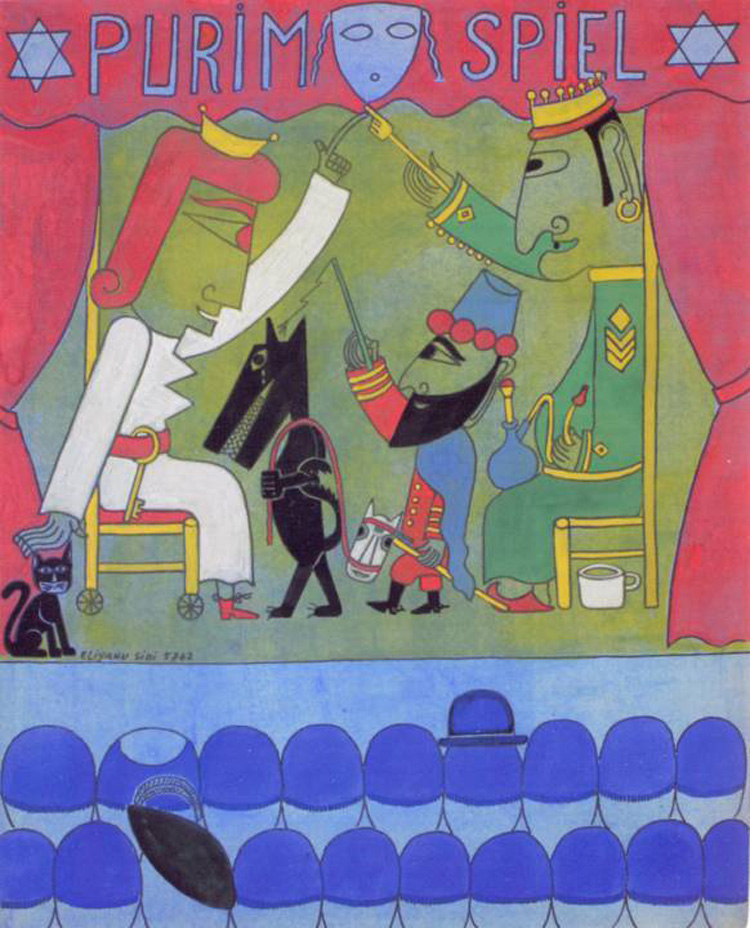
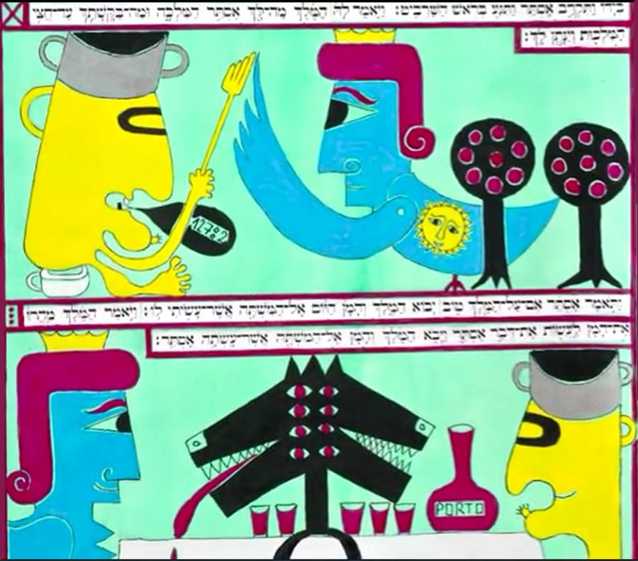
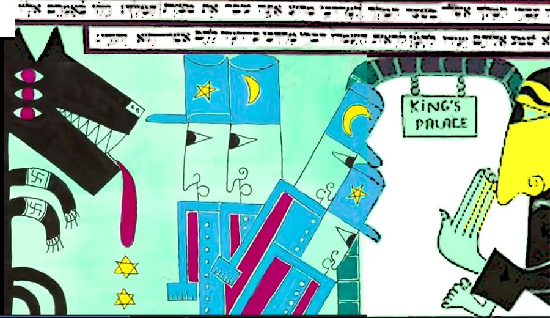
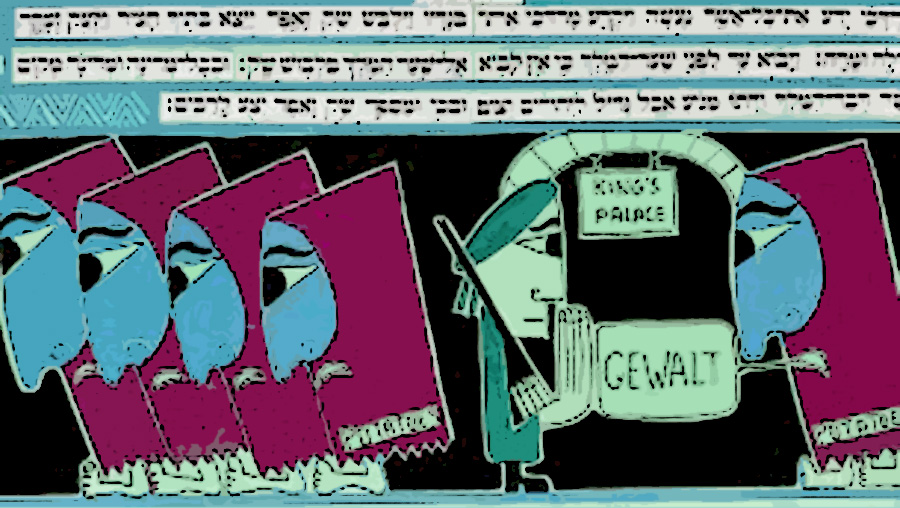
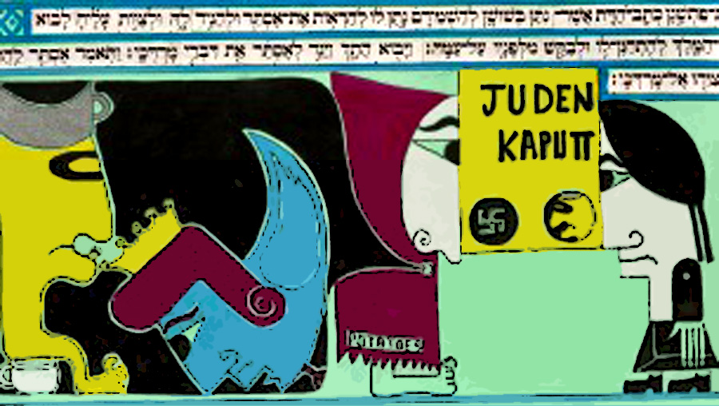
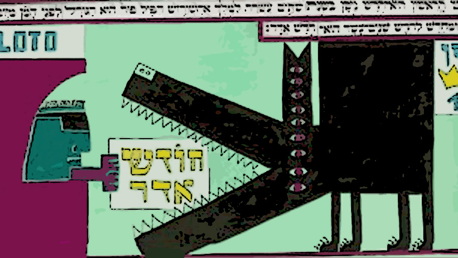
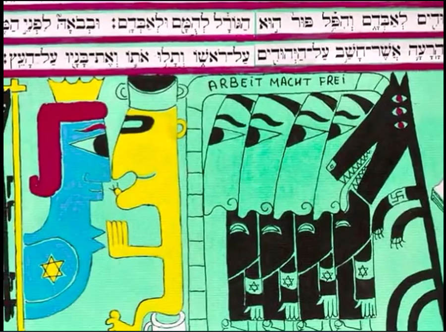

Праздники в Библии · Библия и художник
ПУРИМ. Свиток Эстер художника Илияhу Сиди
Перелистывая мегилат Эстер (синод. – книга Есфирь) художника Элиягу Сиди, вы скоро заметите два плана: в первом - текст древнего сказания о Пуриме, наполненного самопожертвованием и верой Эстер и Мордехая, направленными на разрушение плана Амана об уничтожении евреев. Этот план переплетается с другим - красочно-юмористическим показом нацистского окончательного решения еврейского вопроса.
Свиток Эстер художника Илияhу Сиди
Сиди - изощренный мастер подачи комического через сцены из нескладных, причудливых персонажей. Он высмеивает царя Ахашвероша, изображенного им с отталкивающей бородавкой на с подбородке. Этот царь, сидящий на горшке, с надетым вместо короны чайником. Сиди также помогает понять читателю характер Ахашвероша, отдающего смертельный для евреев указ, призывающий к уничтожению евреев. Об этом говорит нацистская символика на его лице короля.
перевод: Эфраим Калиш
источник: timesofisrael.com

Сиди использует юмор, чтобы передать наполненный страданиями двух тысячелетнее шествие еврейского народа по всем странам диаспоры.
В одном из эпизодов, Мордехай и евреи Шушана - одетые в о вретище обсуждают известие об их приближающемся уничтожении. Сиди включает надпись на идише, гласящей "Juden kaput" (евреи обречены). Эхом повторяют это отчаявшиеся иудеи в на протяжении всего их пребывания в диаспоре. Чтобы отличать «хороших парней» от «плохих парней», Сиди использует яркие локальные цвета и примитивность, одномерных фигур, заимствованных из карикатур на евреев. Здесь Королева Эстер показана с птичьей фигурой нежно голубого цвета и фиолетовыми волосами. В противоположность этому, Аман изображается в виде темного, зубастого волка с нацистской свастикой на руке.

Не так давно работы Сиди была частью групповой выставке на наивного искусства в музее Диаспоры в Тель-Авив; в 2009 году его работы были представлены в крупной выставке в Бейт Ави Хай в Иерусалиме. На протяжении многих лет его искусство, которые сочетаются еврейские и современные темы со здоровой дозой юмора, участвовали в двадцати пяти показах в музеях в Израиле и во всем мире.

.В то время, как его потрясающие работы отражают наивную художественную традицию, самому Элияhу, тем не менее, много чего есть сказать визуальными средствами о еврейской истории и традиции. Сиди, его сфера – фольклор, его живописные работы – дружелюбны и избегают интеллектуального высокомерия», - пишет Гедеон Офрат, историк искусств в каталоге выставки Сиди в Бейт Авихай.

Родился Элияhу Сиди в Париже в 1936 году. Вместе с его семьей они перебиралась пешком через горы центральной части Франции во время Второй мировой войны, и провели военные годы там. Он поселился в Израиле со своими родителями вскоре после создания государства Израиль. Тем не менее, Свиток Эстер, который он иллюстрировал двадцатью годами позже, он рисует опираясь на свои французские переживания того периода. Дворцовая охрана Ахашвероша облачена во французские мундиры и фуражки с характерным козырьком.

Отсылки из современной жизни еврейского государства пронизывают свиток Эстер, созданный Сиди. Мы видим лоты, поданные за роковой день Пурима распределяются от современного израильского Lotto стенде. Статья из "Шушан Трибюн" торжественно объявлено: "500 убиты I.D.F., Нюрнбергский процесс - десять повешенных ".

На протяжении свитка Эстер Сиди, есть немало визуального комического, помещенного Сиди, чтобы смягчить описательную часть памяти катастрофой европейского еврейства. Возможно Сиди интуитивно осознает, что это единственный способ воспоминания и размышления о болезненном двух тысячелетнем периоде диаспоры.

Смотрите видео интервью об этом с Элияу Сиди
Об этом художнике читайте также статью